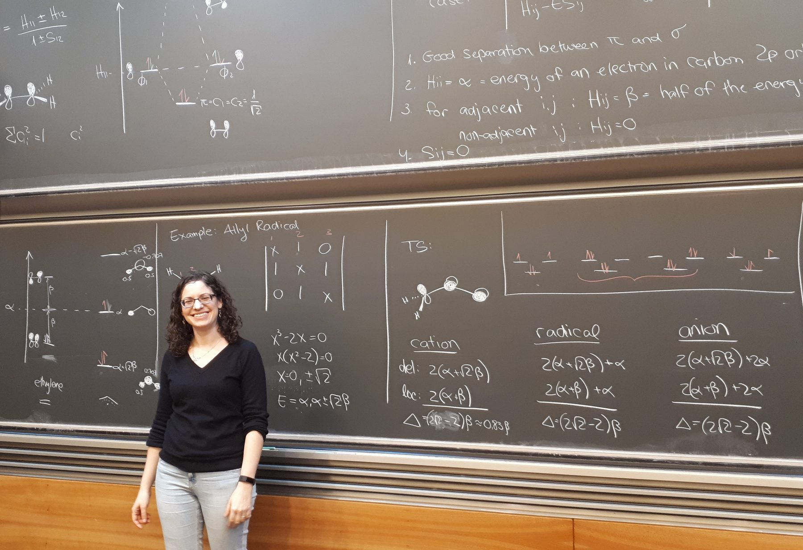
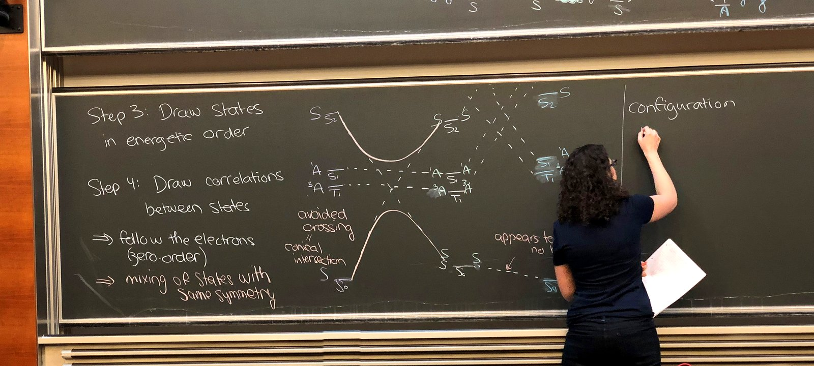

Computational Physical Organic Chemistry · Technion — Israel Institute of Technology

“Chemistry makes the most sense when you can see why things happen. I want my students to leave not with a list of rules, but with the intuition to work out the answers for themselves.”— Renana Gershoni-Poranne
The foundations of chemistry for first-year students: from atoms, light and quantum theory, through the periodic table and chemical bonding (from Lewis structures to molecular orbitals), to reactions, equilibrium, and acids and bases.
Lecturer since 2022A bridge between the quantum world and organic chemistry: qualitative MO theory, frontier orbitals, the Woodward–Hoffmann rules in ground and excited states, hyperconjugation and the anomeric effect. Students gain the intuition and tools to analyze – and predict – organic reactivity.
Lecturer since 2022The physical organic chemistry behind reaction mechanisms: potential energy surfaces, the Curtin–Hammett principle and the Hammond postulate, linear free-energy relationships, kinetics and isotope effects, and the reactive intermediates of organic chemistry – carbocations, carbanions and carbenes.
Lecturer since 2026A hands-on lab for students with little or no prior experience: running electronic-structure calculations with freely available software (ORCA, xTB), analyzing molecular properties and exploring reaction mechanisms, and finishing with an independent project written up as a research communication.
Lecturer since 2024Before the Technion, Renana taught Organic Chemistry IV: Physical Organic Chemistry at ETH Zürich (2018–2021), and for seven years was a teaching assistant and senior teaching assistant at the Technion for general, organic and physical-methods courses (2008–2015).

Mentor to new faculty members in the Technion Leadership Program (2026–2027).
A scientific lecture for high-school chemistry teachers (2026).
Popular science for a general audience (2025).
A workshop for graduate students and postdocs on designing effective scientific posters (2025).
A lecture for Chemistry Olympiad students and judging a high-school Chemistry Tournament (2024).
Eleven awards for teaching, from the Technion and ETH Zürich. Hover over or tap an award for the details.